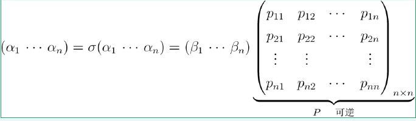

每一个矩阵都可以看作是线性变换，矩阵乘法也是由线性变换的复合引出的。
线性变换
理解
线性变换是一种映射，对于向量来说，就是线性空间到线性空间的映射。这里不严格给出线性变换的定义，但举例来说，投影变换、反射变换、不定积分等都可以看做是线性变换。
与线性变换相对的是仿射变换，例如：
T(x)=Ax+x0
就是一个仿射变换，可以通俗的理解为对现象变换Ax加上了一个偏移量x0。
性质
由线性变换的性质，我们可以得到：
- T(0)=0,T(−x)=−x
- T(c1x1+c2x2+...+cnxn)=c1T(x1)+c2T(x2)+...+cnT(xn)
- 若x1,...,xn线性相关，则T(x1),...T(xn)线性相关。
即线性变换保持向量空间的线性关系。
例如，线性变换总是把直线变成直线，把三角形变成三角形，把平行四边形变成平行四边形。。。
线性变换的矩阵表示
我们想用一个矩阵来表示一个向量中所有线性空间中的变换，也就是用矩阵来描述这个线性变换。
设V和W分别是数域上n维、m维向量空间，T:V→W是V到W的线性变换。
在V中取一组基v1,...,vn，则对于任意的v,可以用基表示为v=c1v1,...,cnvn，这也就是v在这组基下的坐标。
因此，T(v)=c1T(v1)+...+cnT(vn)。我们可以发现，要求这个线性空间中任意向量的线性变化，只需要知道基的变换即可。
因此，我们可以在W中取一组基w1,...,wm，则得到基的线性变换为：
称m×n矩阵A为线性变换T在V中给定基v1,....,vn和W中给定基w1,...,wm下的矩阵表示。
线性变换与矩阵之间的关系
线性变换的唯一性
对于一个线性变换σ，在确定了一组基后，对应于唯一的矩阵A。
而一个矩阵A在一组基下，也对应唯一一个线性变换σ。
可逆线性变换
设σ∈L(V,V)为可逆线性变换，且σ在V的某一组基下的矩阵为A，则σ−1在这组基下的矩阵为A−1。
例子
设线性变换t:R3→R2定义为t(x,y,z)=(x+y,y−z)，线性变换σ:R2→R2定义为σ(u,v)=(2u−v,u)，求线性变换σt:R3→R2在R3与R2标准基下的矩阵。
注意到：
σt(x,y,z)=σ(t(x,y,z))=σ(x+y,y−z)=(2x+y+z,x+y)
因此在R3的标准基e1,e2,e3与R2的标准基δ1,δ2下有：
σt(e1)=σt(1,0,0)=(2,1)=2δ1+δ2
σt(e2)=σt(0,1,0)=(1,1)=δ1+δ2
σt(e3)=σt(0,0,1)=(1,0)=δ1
因此：

又因为：
验证可得：
AB=C
这就是线性变换的复合。
基变换
我们可以将基变换理解为特殊的线性变换，因为基变换其实是可逆线性变换，也就是说，A始终是可逆矩阵。
设σ是恒同变换，则：

则恒同变换σ在两组基下的矩阵表示P与V的这两组基之间的基变换矩阵。
线性变换在不同基下的矩阵
我们发现，线性变换与基的选取有关：同一个线性变换在不同基下的矩阵表示不相同。
因此，我们希望找出线性变换与基无关的性质，或者说，找出线性变换的矩阵表示如何随着基的改变而改变。
对于这样一个变换，我们既可以通过B矩阵直接得到，也可以通过基变换P，在新基上用A矩阵变换，最后回到原来的基上来表示，因此可以得到：
B=PAP−1
我们发现，对于同样一个线性变化，在不同基下的变换矩阵时相似的，同时，可逆矩阵P表示这个基变换矩阵。
这是个很好的性质，我们因此可以理解对角化A=SΛS−1和奇异值分解A=U∑VT，在此不再赘述，可以参考目录。
参考资料
- 线性代数(2)